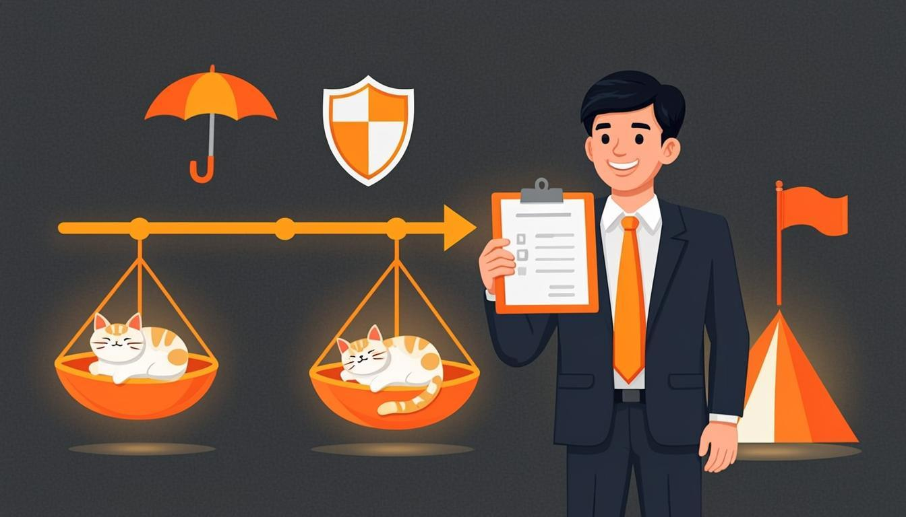

Warm-up
10 minwork communication · deadlines · promises🎧 Listen to the questions
❓ Three questions — click a card to open the sentence starters
Listening — The Release Plan with Stakes
12 minaudio + comprehension
🧩 Before you listen: 10 key words
Click a word — a definition and an example will open. The Russian gloss is there to check your understanding. Listen to the recording of all ten words.
🎧 Track 1 — The Release Plan with Stakes
🌍 Extension — BBC 6 Minute English: Rude emails
From the yearly plan: Rude emails ↗
Task: why do emails turn rude? Note 2 phrases for polite requests and any if / unless structures you hear.
Reading — The Email Doctor
10 mina polite letter with stakesFrom: Dana · To: Marcus (partner studio) · Subject: Launch week — plan B
Hi Marcus,
Quick update before our launch on Friday. If QA approves the build on Wednesday, we will ship on schedule. If we find a critical bug, we will stop the launch and tell you the same day — no quiet delays, I promise.
Two safety nets. Unless the servers hold under the launch load, we will postpone to the following Tuesday. And in case the store page breaks on launch day, our QA lead keeps the rollback ready, so the downtime will be minutes, not days.
As soon as the trailer passes the review, I will send it to you. Could you confirm the banner slot before Thursday? As long as everything stays green, the plan does not change.
Thanks — and talk after the launch,
Dana
🌍 Extension — Breaking News English
From the yearly plan — choose any business news lesson at level 5–6: breakingnewsenglish.com ↗
Task: do the reading, then say 3 first-conditional sentences about the company in the news: If the deal goes through, they will open two studios.
Grammar — First Conditional & Future Time Clauses
10 minrules + 4 exercisesFIRST CONDITIONAL — one plan, real stakes
- Form: If + Present Simple, will + infinitive — If QA approves the build, we will ship on Friday.
- Meaning: one concrete, possible future — this release, this week.
- Promises and warnings: If we find a critical bug, we will stop the launch.
- will can move: We will ship if QA approves. (no comma then)
🔗 The connectors — all keep Present Simple inside
- unless = if not: Unless the servers hold, we will postpone.
- as soon as = immediately when: As soon as the trailer passes the review, I will send it.
- in case = insurance, before it might happen: In case the store page breaks, Tom keeps the rollback ready.
- until / as long as: We will not sleep until the build is live. As long as the numbers grow, the party stays.
⚙️ Mini-table — law, plan, or insurance?
| Sentence | Why? |
|---|---|
| If the build fails, we roll back. | True every time → zero (yesterday's law). |
| If QA approves on Wednesday, we will ship on Friday. | One concrete release → first. |
| Unless the servers hold, we will postpone. | unless = if not; the plan with its opposite condition → first. |
| In case the store page breaks, we keep the rollback ready. | Insurance before anything happens → in case (no will needed). |
| As soon as the trailer passes, I will send it. | A trigger and its result → first with a time connector. |
| As long as the numbers grow, the party stays. | A condition that must continue → as long as. |
🎬 Video — BBC Learning English: The first conditional (Conditionals with Georgie)
🔊 Shadowing — speak along with the speaker
Track A — plans and promises (if + will), Track B — safety nets and triggers (unless / in case / as soon as). Listen to a sentence → repeat it out loud in the pause. Two loops per track.
Grammar → Speaking — the main section of the lesson
15 mingoal: plans with stakes, promises, polite emails🎙 Round 1 — Release Plan with Stakes 6 sentences
Take your nearest real release, exam or deadline and give it 6 sentences with stakes: at least one if, one unless, one as soon as, one in case. Model: If QA approves, we launch; unless the servers hold, we postpone; as soon as the trailer drops, I will post it. 2 minutes.
🎙 Round 2 — Promise Corner condition → promise
Turn five conditions into promises about your real work or QA course. Model: If I get the budget, I will hire two QA engineers. If I finish the regression module on Sunday, I will take a day off. Every promise must have a real stake. 90 seconds.
🎙 Round 3 — Email Doctor (the plan's core drill)
Below is a rude partner email. Rewrite it out loud as a polite one with first conditionals: If it is possible, could you…; we will reply as soon as we know. Then record your version. The rude email stays in the past where it belongs.
From: angry partner · “You missed the date again. Send the build NOW. If you will miss the deadline one more time, we will find another studio. And don't write to me until it's done.”
⚡ Speed Drill — a situation every 5 seconds
Open a card and instantly say the plan, the promise or the safety net — out loud, with the right connector.
Writing — the partner letter
5 min3 first conditionals, 40–80 wordsModel answer — open it after your own version
Hi Marcus, a quick plan for launch week. If QA approves the build on Wednesday, we will ship on Friday as agreed. If the partner banners are ready by Thursday, we will turn them on the same evening. Unless something dramatic happens, the trailer goes live on Monday, and we will send you the final numbers as soon as the store updates them. If you need the demo earlier, just say the word — we will find a slot.
Homework
≤ 30 minutes in total🧑🏫 Teacher notes
Goal: the student plans one concrete future out loud — if + Present Simple + will — and handles the four safety-net connectors (unless, as soon as, in case, until / as long as) without dragging will inside the condition.
Suggested flow: Warm-up: rude emails and protected deadlines; collect unless candidates → Listening: the release plan with stakes; second pass copies if / unless / in case / as soon as word for word → Reading: Dana's letter labels every connector; Breaking News gives 3 free first conditionals → Grammar: the mini-table's law-vs-plan-vs-insurance rows are the heart; the trap box (if you will press) is the module's most valuable sentence → Speaking: Round 3 (email doctor) is the plan's core drill — the student rewrites rudeness into conditionals in real time.
Success criteria: Round 1 — 6 sentences, all four connectors present, no will after if/unless/as soon as/in case; Round 2 — 5 promises with real stakes; Round 3 — the rude email softened with at least 3 first conditionals.
Error pocket: will in the if-half · double negation with unless (unless we don't…) · will after when/as soon as/until · confusing if and in case (if = when it happens; in case = as insurance before it might) · unless for impossible conditions (use if… not or second conditional instead).
Threads: Tom's rollback from Lesson 17 returns as the insurance policy (in case the store page breaks, Tom keeps the rollback ready); the office party is now officially a conditional promise; the polite-letter genre grows into Lesson 19's instructions — writing to a partner is one step from writing a checklist; the rude email quotes the BBC episode from the listening section.